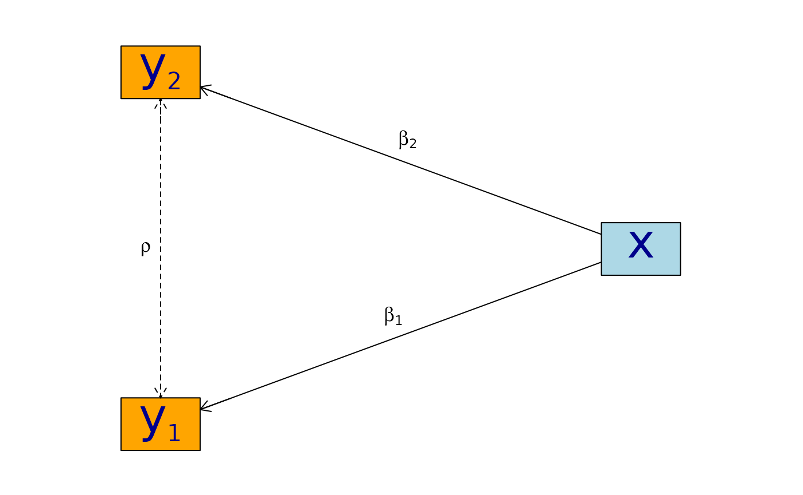

Estimating partial correlations with lava
Klaus Kähler Holst
2025-11-05
Source:vignettes/correlation.Rmd
correlation.RmdThis document illustrates how to estimate partial correlation
coefficients using lava.
Assume that and are conditionally normal distributed given with the following linear structure with covariates and measurement errors
library('lava')
m0 <- lvm(y1+y2 ~ x, y1 ~~ y2)
edgelabels(m0, y1 + y2 ~ x) <- c(expression(beta[1]), expression(beta[2]))
edgelabels(m0, y1 ~ y2) <- expression(rho)
plot(m0, layoutType="circo")
Here we focus on inference with respect to the correlation parameter .
Simulation
As an example, we will simulate data from this model with a single covariate. First we load the necessary libraries:
The model can be specified (here using the pipe notation) with the
following syntax where the correlation parameter here is given the label
‘r’:
m0 <- lvm() |>
covariance(y1 ~ y2, value='r') |>
regression(y1 + y2 ~ x)To simulate from the model we can now simply use the sim
method. The parameters of the models are set through the argument
p which must be a named numeric vector of parameters of the
model. The parameter names can be inspected with the coef
method
coef(m0, labels=TRUE)
#> m1 m2 p1 p2 p3 p4 p5
#> "y1" "y2" "y1~x" "y2~x" "y1~~y1" "y2~~y2" "r"The default simulation parameters are zero for all intercepts
(y1, y2) and one for all regression
coefficients (y1~x, y2~x) and residual
variance parameters (y1~~y1, y2~~y2).
d <- sim(m0, 500, p=c(r=0.9), seed=1)
head(d)
#> y1 y2 x
#> 1 0.6452154 0.8677628 1.13496509
#> 2 1.1098723 0.9579211 1.11193185
#> 3 -2.2072258 -2.3171509 -0.87077763
#> 4 1.5684365 1.0675354 0.21073159
#> 5 0.8752209 1.0845932 0.06939565
#> 6 -1.5113072 -0.7477956 -1.66264885Under Gaussian and coarsening at random assumptions we can also
consistently estimate the correlation in the presence of censoring or
missing data. To illustrate this, we add left and right censored data
types to the model output using the transform method.
cens1 <- function(threshold,type='right') {
function(x) {
x <- unlist(x)
if (type=='left')
return( survival::Surv(pmax(x,threshold), x>=threshold, type='left') )
return ( survival::Surv(pmin(x,threshold), x<=threshold) )
}
}
m0 <-
transform(m0, s1 ~ y1, cens1(-2, 'left')) |>
transform(s2 ~ y2, cens1(2, 'right'))
d <- sim(m0, 500, p=c(r=0.9), seed=1)
head(d)
#> y1 y2 x s1 s2
#> 1 0.6452154 0.8677628 1.13496509 0.6452154 0.8677628
#> 2 1.1098723 0.9579211 1.11193185 1.1098723 0.9579211
#> 3 -2.2072258 -2.3171509 -0.87077763 -2.0000000- -2.3171509
#> 4 1.5684365 1.0675354 0.21073159 1.5684365 1.0675354
#> 5 0.8752209 1.0845932 0.06939565 0.8752209 1.0845932
#> 6 -1.5113072 -0.7477956 -1.66264885 -1.5113072 -0.7477956Estimation and inference
The Maximum Likelihood Estimate can be obtainted using the
estimate method:
m <- lvm() |>
regression(y1 + y2 ~ x) |>
covariance(y1 ~ y2)
e <- estimate(m, data=d)
e
#> Estimate Std. Error Z-value P-value
#> Regressions:
#> y1~x 0.93300 0.04443 20.99871 <1e-12
#> y2~x 0.91652 0.04527 20.24500 <1e-12
#> Intercepts:
#> y1 -0.00541 0.04482 -0.12076 0.9039
#> y2 -0.02715 0.04566 -0.59457 0.5521
#> Residual Variances:
#> y1 1.00419 0.06351 15.81139
#> y1~~y2 0.91221 0.06130 14.88041 <1e-12
#> y2 1.04252 0.06593 15.81139The estimate y1~~y2 gives us the estimated covariance
between the residual terms in the model. To estimate the correlation we
can apply the delta method using the estimate method
again
estimate(e, function(p) p['y1~~y2']/(p['y1~~y1']*p['y2~~y2'])^.5)
#> Estimate Std.Err 2.5% 97.5% P-value
#> y1~~y2 0.8915 0.008703 0.8745 0.9086 0Alternatively, the correlations can be extracted using the
correlation method
correlation(e)
#> Estimate Std.Err 2.5% 97.5% P-value
#> y1~y2 0.8915 0.8721 0.9082 3.58e-224Note, that in this case the confidence intervals are constructed by using a variance stabilizing transformation, Fishers -transform (Lehmann and Romano 2023),
$$z = \arctanh(\widehat{\rho}) = \frac{1}{2}\log\left(\frac{1+\widehat{\rho}}{1-\widehat{\rho}}\right)$$ where is the MLE. This estimate has an approximate asymptotic normal distribution $\mathcal{N}(\arctanh(\rho),\frac{1}{n-3})$. Hence a asymptotic 95% confidence interval is given by and the confidence interval for can directly be calculated by the inverse transformation:
This is equivalent to the direct calculations using the delta method
(except for the small sample bias correction
)
where the estimate and confidence interval are transformed back to the
original scale using the back.transform argument.
estimate(e, function(p) atanh(p['y1~~y2']/(p['y1~~y1']*p['y2~~y2'])^.5), back.transform=tanh)
#> Estimate Std.Err 2.5% 97.5% P-value
#> y1~~y2 0.8915 0.8732 0.9074 7.445e-249The transformed confidence interval will generally have improved coverage especially near the boundary .
While the estimates of this particular model can be obtained in
closed form, this is generally not the case when for example considering
parameter constraints, latent variables, or missing and censored
observations. The MLE is therefore obtained using iterative optimization
procedures (typically Fisher scoring or Newton-Raphson methods). To
ensure that the estimated variance parameters leads to a meaningful
positive definite structure and to avoid potential problems with
convergence it can often be a good idea to parametrize the model in a
way that such parameter constraints are naturally fulfilled. This can be
achieved with the constrain method.
m2 <- m |>
parameter(~ l1 + l2 + z) |>
variance(~ y1 + y2, value=c('v1','v2')) |>
covariance(y1 ~ y2, value='c') |>
constrain(v1 ~ l1, fun=exp) |>
constrain(v2 ~ l2, fun=exp) |>
constrain(c ~ z+l1+l2, fun=function(x) tanh(x[1])*sqrt(exp(x[2])*exp(x[3])))In the above code, we first add new parameters l1 and
l2 to hold the log-variance parameters, and z
which will be the z-transform of the correlation parameter. Next we
label the variances and covariances: The variance of y1 is
called v1; the variance of y2 is called
v2; the covariance of y1 and y2
is called c. Finally, these parameters are tied to the
previously defined parameters using the constrain method
such that v1 :=
v2 :=
and z :=
.
In this way there is no constraints on the actual estimated parameters
l1, l2, and z which can take any
values in
,
while we at the same time are guaranteed a proper covariance matrix
which is positive definite.
e2 <- estimate(m2, d)
e2
#> Estimate Std. Error Z-value P-value
#> Regressions:
#> y1~x 0.93300 0.04443 20.99871 <1e-12
#> y2~x 0.91652 0.04527 20.24500 <1e-12
#> Intercepts:
#> y1 -0.00541 0.04482 -0.12076 0.9039
#> y2 -0.02715 0.04566 -0.59457 0.5521
#> Additional Parameters:
#> l1 0.00418 0.06325 0.06617 0.9472
#> l2 0.04164 0.06325 0.65832 0.5103
#> z 1.42942 0.04472 31.96286 <1e-12The correlation coefficient can then be obtained as
estimate(e2, 'z', back.transform=tanh)
#> Estimate Std.Err 2.5% 97.5% P-value
#> [z] 0.8915 0.8729 0.9076 5.606e-243
#>
#> Null Hypothesis:
#> [z] = 0In practice, a much shorter syntax can be used to obtain the above
parametrization. We can simply use the argument constrain
when specifying the covariances (the argument rname
specifies the parameter name of the $\arctanh$ transformed correlation
coefficient, and lname, lname2 can be used to
specify the parameter names for the log variance parameters):
m2 <- lvm() |>
regression(y1 + y2 ~ x) |>
covariance(y1 ~ y2, constrain=TRUE, rname='z')
e2 <- estimate(m2, data=d)
e2
#> Estimate Std. Error Z-value P-value
#> Regressions:
#> y1~x 0.93300 0.04443 20.99871 <1e-12
#> y2~x 0.91652 0.04527 20.24500 <1e-12
#> Intercepts:
#> y1 -0.00541 0.04482 -0.12076 0.9039
#> y2 -0.02715 0.04566 -0.59457 0.5521
#> Additional Parameters:
#> l1 0.00418 0.06325 0.06617 0.9472
#> l2 0.04164 0.06325 0.65832 0.5103
#> z 1.42942 0.04472 31.96286 <1e-12
estimate(e2, 'z', back.transform=tanh)
#> Estimate Std.Err 2.5% 97.5% P-value
#> [z] 0.8915 0.8729 0.9076 5.606e-243
#>
#> Null Hypothesis:
#> [z] = 0As an alternative to the Wald confidence intervals (with or without
transformation) is to profile the likelihood. The profile likelihood
confidence intervals can be obtained with the confint
method:
Finally, a non-parametric bootstrap (in practice a larger number of replications would be needed) can be calculated in the following way
set.seed(1)
b <- bootstrap(e2, data=d, R=50, mc.cores=1)
b
#> Non-parametric bootstrap statistics (R=50):
#>
#> Estimate Bias Std.Err 2.5 % 97.5 %
#> y1 -0.0054119135 -0.0009992035 0.0467447038 -0.0932389998 0.0770206657
#> y2 -0.0271494916 0.0002650151 0.0467360144 -0.1211337493 0.0483704809
#> y1~x 0.9330043509 -0.0149098946 0.0515360969 0.8309736543 0.9998117487
#> y2~x 0.9165185250 -0.0054613366 0.0515815249 0.8206914258 1.0057939308
#> l1 0.0041846522 -0.0207541703 0.0680010956 -0.1521461170 0.0970349017
#> l2 0.0416361064 -0.0172477586 0.0645290353 -0.1102270167 0.1486146877
#> z 1.4294227075 -0.0086990026 0.0431164145 1.3409919820 1.4973573361
#> v1 1.0041934200 -0.0184096665 0.0664333005 0.8588861834 1.1019310023
#> v2 1.0425150452 -0.0157357318 0.0662409478 0.8956329451 1.1602357905
#> c1 0.9122097189 -0.0171972066 0.0627102019 0.7706302260 1.0085879892Censored observations
Letting one of the variables be right-censored (Tobit-type model) we
can proceed in exactly the same way (note, this functionality is only
available with the mets package installed - available from
CRAN). The only difference is that the variables that are censored must
all be defined as Surv objects (from the
survival package which is automatically loaded when using
the mets package) in the data frame.
m3 <- lvm() |>
regression(y1 + s2 ~ x) |>
covariance(y1 ~ s2, constrain=TRUE, rname='z')
e3 <- estimate(m3, d)
e3
#> Estimate Std. Error Z-value P-value
#> Regressions:
#> y1~x 0.93301 0.04443 20.99891 <1e-12
#> s2~x 0.92402 0.04643 19.90128 <1e-12
#> Intercepts:
#> y1 -0.00542 0.04482 -0.12083 0.9038
#> s2 -0.02119 0.04638 -0.45687 0.6478
#> Additional Parameters:
#> l1 0.00418 0.06325 0.06607 0.9473
#> l2 0.06317 0.06492 0.97307 0.3305
#> z 1.42835 0.04546 31.41861 <1e-12
estimate(e3, 'z', back.transform=tanh)
#> Estimate Std.Err 2.5% 97.5% P-value
#> [z] 0.8913 0.872 0.9079 1.491e-226
#>
#> Null Hypothesis:
#> [z] = 0And here the same analysis with s1 being left-censored
and s2 right-censored:
m3b <- lvm() |>
regression(s1 + s2 ~ x) |>
covariance(s1 ~ s2, constrain=TRUE, rname='z')
e3b <- estimate(m3b, d)
e3b
#> Estimate Std. Error Z-value P-value
#> Regressions:
#> s1~x 0.92834 0.04479 20.72734 <1e-12
#> s2~x 0.92466 0.04648 19.89515 <1e-12
#> Intercepts:
#> s1 -0.00233 0.04492 -0.05185 0.9586
#> s2 -0.02083 0.04641 -0.44874 0.6536
#> Additional Parameters:
#> l1 -0.00075 0.06500 -0.01156 0.9908
#> l2 0.06425 0.06498 0.98869 0.3228
#> z 1.42627 0.04609 30.94282 <1e-12
e3b
#> Estimate Std. Error Z-value P-value
#> Regressions:
#> s1~x 0.92834 0.04479 20.72734 <1e-12
#> s2~x 0.92466 0.04648 19.89515 <1e-12
#> Intercepts:
#> s1 -0.00233 0.04492 -0.05185 0.9586
#> s2 -0.02083 0.04641 -0.44874 0.6536
#> Additional Parameters:
#> l1 -0.00075 0.06500 -0.01156 0.9908
#> l2 0.06425 0.06498 0.98869 0.3228
#> z 1.42627 0.04609 30.94282 <1e-12
estimate(e3b, 'z', back.transform=tanh)
#> Estimate Std.Err 2.5% 97.5% P-value
#> [z] 0.8909 0.8713 0.9077 9.006e-222
#>
#> Null Hypothesis:
#> [z] = 0SessionInfo
sessionInfo()
#> R version 4.5.2 (2025-10-31)
#> Platform: x86_64-pc-linux-gnu
#> Running under: Ubuntu 24.04.3 LTS
#>
#> Matrix products: default
#> BLAS: /usr/lib/x86_64-linux-gnu/openblas-pthread/libblas.so.3
#> LAPACK: /usr/lib/x86_64-linux-gnu/openblas-pthread/libopenblasp-r0.3.26.so; LAPACK version 3.12.0
#>
#> locale:
#> [1] LC_CTYPE=C.UTF-8 LC_NUMERIC=C LC_TIME=C.UTF-8
#> [4] LC_COLLATE=C.UTF-8 LC_MONETARY=C.UTF-8 LC_MESSAGES=C.UTF-8
#> [7] LC_PAPER=C.UTF-8 LC_NAME=C LC_ADDRESS=C
#> [10] LC_TELEPHONE=C LC_MEASUREMENT=C.UTF-8 LC_IDENTIFICATION=C
#>
#> time zone: UTC
#> tzcode source: system (glibc)
#>
#> attached base packages:
#> [1] stats graphics grDevices utils datasets methods base
#>
#> other attached packages:
#> [1] lava_1.8.3
#>
#> loaded via a namespace (and not attached):
#> [1] Matrix_1.7-4 future.apply_1.20.0 jsonlite_2.0.0
#> [4] compiler_4.5.2 Rcpp_1.1.0 parallel_4.5.2
#> [7] Rgraphviz_2.54.0 jquerylib_0.1.4 globals_0.18.0
#> [10] splines_4.5.2 systemfonts_1.3.1 textshaping_1.0.4
#> [13] yaml_2.3.10 fastmap_1.2.0 lattice_0.22-7
#> [16] R6_2.6.1 generics_0.1.4 knitr_1.50
#> [19] BiocGenerics_0.56.0 htmlwidgets_1.6.4 graph_1.88.0
#> [22] future_1.67.0 desc_1.4.3 bslib_0.9.0
#> [25] rlang_1.1.6 cachem_1.1.0 xfun_0.54
#> [28] fs_1.6.6 sass_0.4.10 cli_3.6.5
#> [31] progressr_0.17.0 pkgdown_2.1.3 digest_0.6.37
#> [34] grid_4.5.2 mvtnorm_1.3-3 lifecycle_1.0.4
#> [37] timereg_2.0.7 evaluate_1.0.5 numDeriv_2016.8-1.1
#> [40] listenv_0.10.0 codetools_0.2-20 ragg_1.5.0
#> [43] survival_3.8-3 stats4_4.5.2 parallelly_1.45.1
#> [46] rmarkdown_2.30 mets_1.3.8 tools_4.5.2
#> [49] htmltools_0.5.8.1